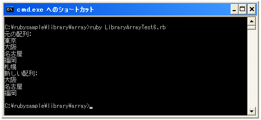

- Home ›
- Ruby入門 ›
- 配列(Array)クラス
要素を取得する
配列に含まれる要素を取得するには次のように行います。
変数 = Arrayオブジェクト[index]
上記は1つの要素を取得するものですが、他にも複数の要素を配列として取得することが出来ます。
開始インデックスと終了インデックスを指定して新しい配列を作成する
指定した開始インデックスと終了インデックスまでの要素を新しい配列として取得するには次の構文を使います。
新しいArrayオブジェクト = Arrayオブジェクト[start..end]
「start」に指定したインデックスから「end」に指定したインデックスまでの要素で新しい配列を作成します。
ary = ["東京", "大阪", "名古屋", "福岡", "札幌"] newary = ary[1..3]
上記の場合には新しい配列「newary」として「大阪」「名古屋」「福岡」の3つの要素を持つ新しい配列が作成されます。
サンプルプログラム
次の例を試して下さい。
#! ruby -Ks
ary = ["東京", "大阪", "名古屋", "福岡", "札幌"]
newary = ary[1..3]
print("元の配列:¥n")
ary.each do |youso|
print(youso, "¥n")
end
print("新しい配列:¥n")
newary.each do |youso|
print(youso, "¥n")
end
実行結果は次のようになります。

開始インデックスと要素数を指定して新しい配列を作成する
指定した開始インデックスと要素数を指定して新しい配列として取得するには次の構文を使います。
新しいArrayオブジェクト = Arrayオブジェクト[start, len]
「start」に指定したインデックスから「len」に指定した要素数分だけの要素で新しい配列を作成します。
ary = ["東京", "大阪", "名古屋", "福岡", "札幌"] newary = ary[1, 2]
上記の場合には新しい配列「newary」として「大阪」「名古屋」の2つの要素を持つ新しい配列が作成されます。
サンプルプログラム
実際に試してみます。
#! ruby -Ks
ary = ["東京", "大阪", "名古屋", "福岡", "札幌"]
newary = ary[1, 2]
print("元の配列:¥n")
ary.each do |youso|
print(youso, "¥n")
end
print("新しい配列:¥n")
newary.each do |youso|
print(youso, "¥n")
end
実行結果は次のようになります。
メソッドを使う
配列の要素を取り出す場合は通常は今までに説明した方式を使いますが、同じ結果を得ることが出来るメソッドも用意されています。
まず1つの要素を取得するにはArrayクラスで用意されている「at」メソッドを使います。
変数 = Arrayオブジェクト.at(index)
これは次の場合と同等です。
変数 = Arrayオブジェクト[index]
次に開始インデックスと終了インデックスを指定して新しい配列を取得するにはArrayクラスで用意されている「slice」メソッドを使います。
新しい配列 = Arrayオブジェクト.slice(start..end)
これは次の場合と同等です。
新しい配列 = Arrayオブジェクト[start..end]
最後に開始インデックスと要素数を指定して新しい配列を取得するにはArrayクラスで用意されている「slice」メソッドを使います。
新しい配列 = Arrayオブジェクト.slice(start, len)
これは次の場合と同等です。
新しい配列 = Arrayオブジェクト[start, len]
( Written by Tatsuo Ikura )

著者 / TATSUO IKURA
初心者～中級者の方を対象としたプログラミング方法や開発環境の構築の解説を行うサイトの運営を行っています。